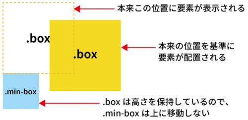
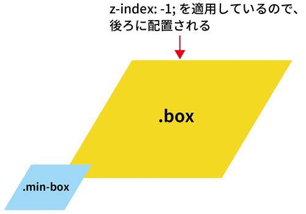

相対位置を指定する position: relative;
- 現在位置を基準に、相対位置を指定することができます
- position: relative; は単体で使用せず、position: absolute; とセットで使うことが多いです
- positionプロパティはrelativeの他にも下記の4つがあります
- fixed
- absolute
- static
- sticky
position: relative; の使い方
- positionプロパティは、要素の配置を指定するプロパティです
- positionプロパティの初期値はstaticで、relativeは要素の現在位置を基準に相対位置を指定することができます
セレクタ { position: relative; }
- positionプロパティは「top」「right」「bottom」「left」の4つのプロパティと合わせて要素の配置を指定します
- 要素の位置を確定させるため、最低でも2つは適用するようにします
<div class="box"></div> <div class="min-box"></div>
* { margin: 0; padding: 0; } .box { position: relative; top: 50px; left: 130px; width: 200px; height: 200px; background-color: #ffe100; } .min-box { width: 100px; height: 100px; background-color: #87ceeb; }

z-indexプロパティで重なり順を指定する
- positionプロパティはstaticを除いて、重なり順を指定するz-indexプロパティを指定することができます
* { margin: 0; padding: 0; } .box { position: relative; top: 50px; left: 80px; width: 200px; height: 200px; background-color: #ffe100; z-index: -1; /* 追記 */ } .min-box { width: 100px; height: 100px; background-color: #87ceeb; }
- z-index: -1; を適用したことによって、boxクラスの要素はmin-boxクラス要素の裏側に配置されました
- z-indexは、値の数字が大きいほど前に、小さいほど後ろに配置されます
